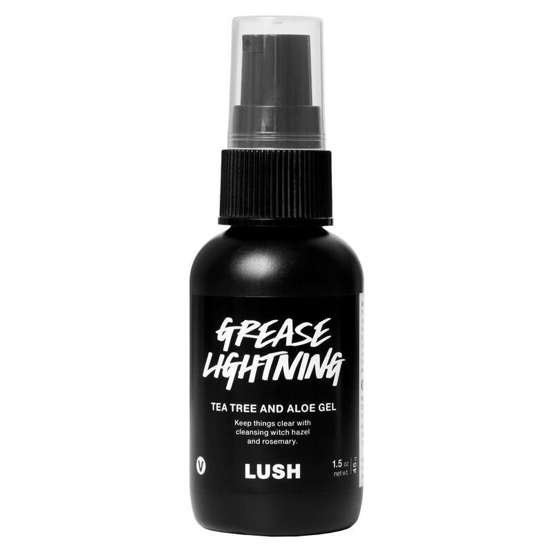
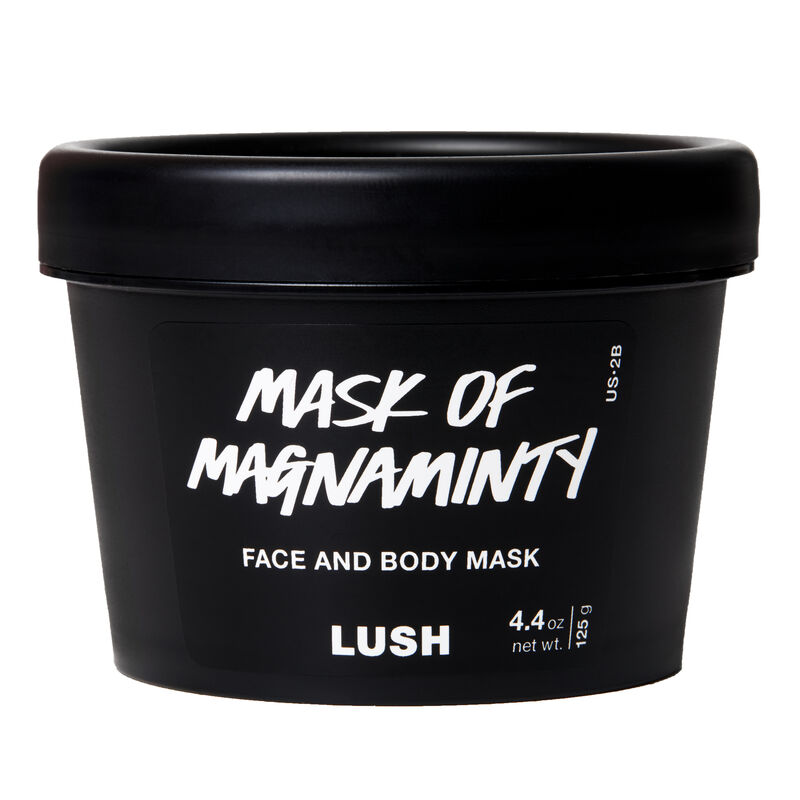
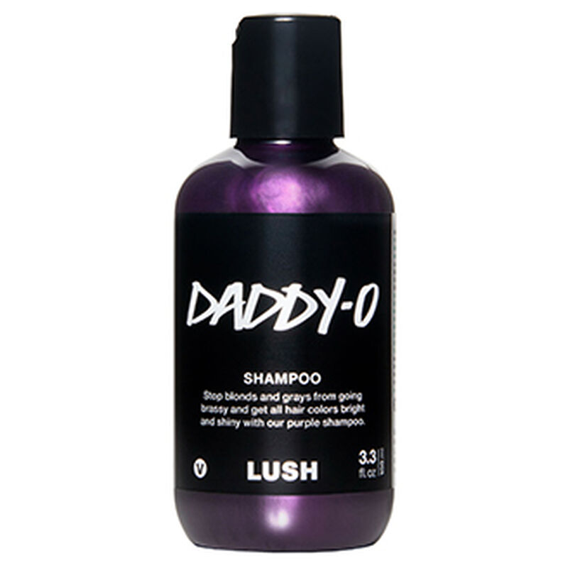
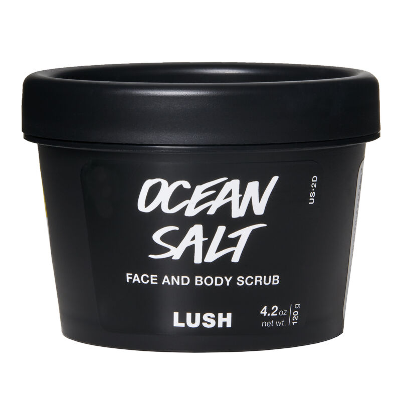
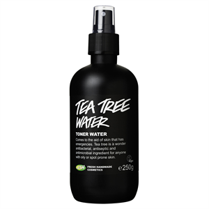

02/06/2020
Grease Lightning |
 | This is a miracle-worker. I apply this spot treatment directly onto the odd spot I get on my face or chest and overnight they almost disappear. I am not kidding you. If I use this daily to treat a spot for about 3-4 days, it is gone. Aloe vera soothes and protects the spots, whilst lavender oil and grape juice calms and balances the infected area. I also love this product because it is a transparent gel and not a sticky white cream, unlike lots of other spot treatments I have previously tried. Because you only need to apply a small amount of gel on the breakout area, the little bottle lasts forever. A true winner. |
|---|---|---|
Mask of Magnamity |
 | This is a refreshingly minty face mask. Smother over your face, leave for 15 mins, scrub and rinse. Peppermint oil cools the skin, aduki beans exfoliate flakey and dry skin, whilst honey soothes and moisturises. This mask calms skin down and leaves a more even complexion after rinsing. No more clogged pores and less redness! |
Happy Hippy Shower Gel |
 |
Mmmm citrus, grapefruit and bergamont. This really wakes you up in the morning and makes your skin feel refreshed. You really can't get tired of this scent. If you are looking for something more minty in the morning, I can also highly recommend Dirty Springwash. |
Daddy-O |
 | To all you blondes out there! This violet-scented, purple shampoo is the best. Keeps blondes from going orange, yellow or brassy. Citrus and seaweed gives hair a softness and shine, whilst violet and rose oils create a lush, long-lasting scent. The shampoo lathers really well and rinses out super easily. Note: I recommend giving this a smell instore before you purchase - it's a bit like marmite, you either love it or hate it! |
Ocean Salt |
 | I don't suffer too badly with dry skin, but I do get areas of dryness on the top of my arms. This is the best scrub ever. It is refreshing and exfoliating, but also hydrating. I find that quite often scrubs remove surface dryness, but can fail to moisturise at the same time. Well Ocean Salt does exactly this. Although the scrub uses coarse sea salt to exfoliate, it succeeds in softening the skin at the same time with avocado butter. A great prep for shaving too. |
Tea Tree Water |
 | The majority of people reading this post have probably used tea tree oil or water in some form. Full of germ-fighting properties for treating bacterial and fungal skin conditions, there are plenty of tea tree products on the market. I use this toner on my t-zone which can be quite oily, especially in the Summer. It cleanses and clarifies the skin incredibly well. I love the scent of this toner too - it is not pure tea tree oil which I find can be quite overwhelming, but is also mixed with uplifting, grapefruit notes which I love. This toner is far more gentle than other toners on the market, and leaves skin feeling refreshed. |
Email: sophieee.price@gmail.com
Mobile: 07513070268